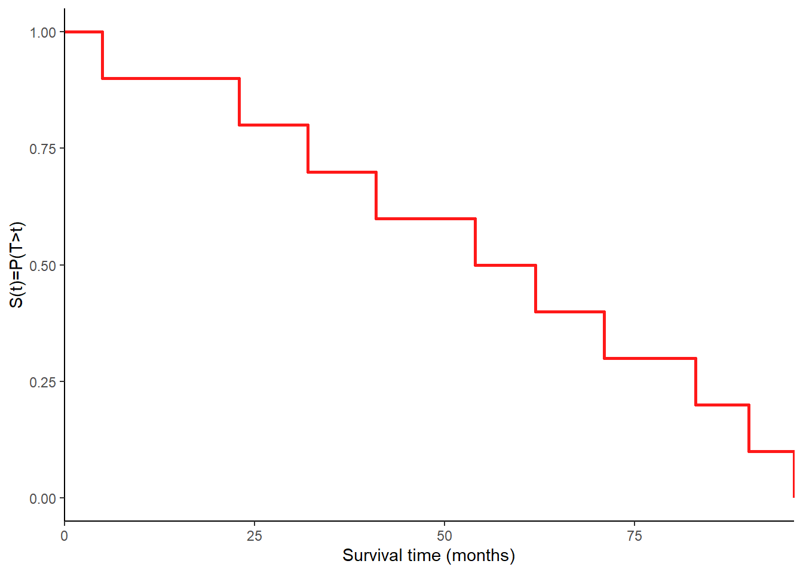
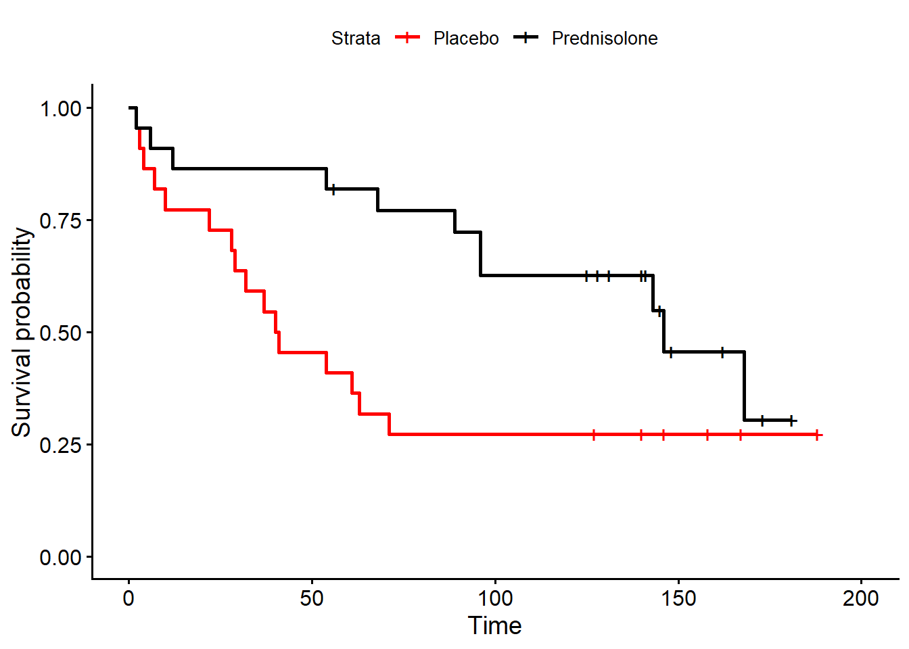

![]()
[1] 23 41 32 83 5 62 96 71 90 54Survival Analysis
Quarto
R
Academia
Medical Statistics
Survival Analysis
Hello folks, I hope everything is well with you and welcome back to my regular blog update. This month nothing particularly exciting has happened to me, but I mostly spent my time catching up with some research collaborations and ideas, plus some usual teaching duties. Although we had a rough start of the year here in Maastricht (at least in terms of weather), now the situation seems a bit calmer and nicer. Overall, I cannot complain to much and need to find the time to finish off some left-off work, and I am talking of my R package missingHE, which will (hopefully) soon get a big update with a bunch of new content! But, before that, let me introduce the topic that I will be discussing today on my blog, that is a gentle presentation of some key concepts of Survival Analysis. I hope this topic is of interest to you and that you find this post helpful in case you were interested in approaching this field of statistics. Personally, I find the topic quite interesting and cool, although I am not an expert when it comes down to very advanced survival analysis methods. Today I will just touch upon some basic elements that assume no previous knowledge on the matter, so rest assured that most of the things I will discuss will make sense for someone who never heard of this topic before (I hope)!
Introduction
Survival Data typically occur where times are recorded from a specific time origin until the occurrence of some pre-defined event of interest for a group of subjects (e.g. time until death following a heart transplant or disease diagnosis). Note that the event of interest does not need to be “death” but may, for instance, refer to the occurrence of remission from a disease or discharge from an hospital. Sometimes, survival data may be also referred to as time-to-event data. For example, we have considered in past posts the concept of a rate as an estimate of the probability of the occurrence of an event of interest within a given time frame. However, rate calculation rests on the quite strong assumption that the underlying risk does not change over time.
Key features of survival data typically include:
Existence of times \(\geq 0\), thus unlikely to come from a Normal distribution.
Shape of empirical distributions that are positively skewed.
For some subjects, the time-to-event is unknown (e.g. still alive at the end of the period of follow-up), for whom we only know that the event of interest has not occurred before a certain time. In particular, a subject’s observed time is defined as censored if the event of interest has not occurred during the follow-up.
Censoring may occur due to a variety of reasons, and may therefore be associated with different observed censoring features. For example, the event of interest may not occur during the follow-up because patients are still alive at the end of the study period, or because subjects are lost to follow-up (patients’ times are said to be right censored). Methods used for the analysis of survival data should account for censoring to avoid bias in the resulting estimates.
Right censoring is by far the most common type of censoring mechanism in medical studies. More technically, we talk about right censoring when a subject enters a study at time \(t_0\) and experiences the event of interest at \(t_0+t\), but the study ends at time \(t_0+c\), where \(c<t\). Thus, we only know that the subject experienced the event at some unknown time \(> t_0 + c\), and we say that the subject’s time is right censored. Other possible types of censoring mechanism for the unknown time \(t\) at which the subject experienced the event include: left censoring, where we only know that \(t<c\); interval censoring, where we only know that \(c_1<t<c_2\).
In addition to the different types of censoring mechanisms, each of these may also be characterised by whether the censoring time is dependent or not on the reasons that lead to the creation of the censoring mechanism. In general, we say that censoring is non-informative if the actual unknown survival time is independent of the mechanism that caused the observation to become censored at some time \(c<t\). This assumption implies that that a subject censored at time \(c\) should be representative of all other subjects who have yet to experience the event of interest at time \(c\). When this is not true, i.e. subjects are censored for reasons related to their unknown survival time, censoring is said to be informative (e.g. a patient drops out from a study because their health deteriorates, likely leading to a lower survival time with respect to all the others still alive at the time of dropout).
The Survival Function
The survival time is measured from a specific origin, often given by randomisation or administration of treatment (RCTs) or by age, since recruitment or infection (observational studies). The variable of interest is the time to the event \(T\), which may not be observed for all subjects. Let us assume that we have a data set with data from \(N\) subjects, and let \(i\)-th denote the subject index for \(i=1,\ldots,N\). We subset the individuals into two separate groups: \(C=\) set of censored subjects, and \(D=\) set of fully-observed event of interest occurrences. Survival data are typically defined using the pair of variables \((t_i,\delta_i)\), where: \(t_i=\) time to event of interest if \(i \in D\) or censoring time if \(i \in C\); \(\delta_i=\) 1 if \(i \in D\) (event experienced) or 0 if \(i \in C\) (subject censored).
Using the pair \((t_i,\delta_i)\), we can now summarise survival data using a survival function. In particular, let \(S(t)\) denote the survival function given by:
\[ S(t) = P(T>t)=1-F(t), \] where \(T\) denotes the survival time (i.e. time to the event) random variable with probability density function \(f(t)\) and cumulative distribution function \(F(t)\). The survival function \(S(t)\) measures the probability that a subject experiences the event beyond time \(t\). If no subject is censored, we could use the following empirical estimate of the function at each time \(t\):
\[ \hat{S}(t) = \frac{\text{Number of subjects with survival time} \geq t}{\text{Total number of subjects in the data set}}, \]
assuming \(\hat{S}(t)\) remains constant between event times.
Example
The following survival times are recorded for 10 patients from a study on multiple myeloma
and their empirical survival function may be graphically represented as

The Kaplan-Meier Estimate
When censoring occurs in a data set, we cannot use the empirical estimate of the survival function but we use its Kaplan-Meier estimate instead, which is calculated as follows:
First, order the failure times (times where an event occurs in the data) from smallest to largest. Assuming \(n\) failures, we write these as \(t(1)< \ldots < t(n)\).
Second, consider \(n-1\) intervals where each starts with a failure time and ends just before the next ordered failure time. Another interval runs from \(t(0)\) until just before the first failure time. We write these as \([t(0),t(1)), \ldots, [t(n),\infty)\).
Third, we define \(n_j=\) number of subjects at the beginning of the interval \([t(j),t(j+1))\) who are uncensored and have not experienced the event, and \(d_j=\) number of failures (subjects who experienced the event) during the interval \([t(j),t(j+1))\).
Fourth, the probability of surviving the interval \([t(j),t(j+1))\) is given by \(\hat{p}_j=\frac{n_j-d_j}{n_j}\).
Fifth, the KM estimate of the survival function for \(t \in [t(k),t(k+1))\) is \(\hat{S}(t)=\prod_{j=1}^k \hat{p}_j\).
Example
Consider the following 18 times until discontinuation of an intrauterine device in a study on the side effects of contraceptives, where censored times are labelled with a value of 0 in the corresponding indicator variable (\(\delta\)).
times delta
1 10 1
2 13 0
3 18 0
4 19 1
5 23 0
6 30 1
7 36 1
8 38 0
9 54 0
10 56 0
11 59 1
12 75 1
13 93 1
14 97 1
15 104 0
16 107 1
17 107 0
18 107 0
Given that survival data are usually skewed, we are often interested in estimating the median survival time, i.e. the smallest time \(t\) for which \(\hat{S}(t)<0.5\).

In many cases we want to compare survival function estimates of two groups of interest.
Comparing survival functions between groups
Example
Kirk et al. (1980) reported findings from a trial of prednisolone in \(44\) patients with chronic active hepatitis, randomised to either receiving prednisolone (\(n=22\)) or placebo (\(n=22\)), with the outcome of interest being survival time (time until death). The survival times (in months) of the two groups of patients are given below, with associated censoring times.
placebo t placebo delta prednis t prednis delta
1 2 1 2 1
2 3 1 6 1
3 4 1 12 1
4 7 1 54 1
5 10 1 56 0
6 22 1 68 1
7 28 1 89 1
8 29 1 96 1
9 32 1 96 1
10 37 1 125 0
11 40 1 128 0
12 41 1 131 0
13 54 1 140 0
14 61 1 141 0
15 63 1 143 1
16 71 1 145 0
17 127 0 146 1
18 140 0 148 0
19 146 0 162 0
20 158 0 168 1
21 167 0 173 0
22 188 0 181 0The aim is to compare the survival functions between the groups, i.e. does the survival rate differ between the groups? We may start by comparing the KM estimates of \(S(t)\) for the two groups. Here, to make things easier for me, I will use the functions survfit() and ggsurvplot(), from the packages survival and survminer, to generate and plot KM estimates for the two groups, respectively.

The log-rank test
Looking at the plots it seems that the estimated survival function decreases more rapidly over time for the placebo group. Now, can adopt an hypothesis test to assess formally whether there is any significant difference in survival between the two groups? For example, we can use a non-parametric log-rank test to test the null hypothesis that the survival functions are the same for the two groups. More generally, where there are \(K\) groups, the test statistic is
\[ \chi^2 = \sum_{i=1}^K \frac{(O_i - E_i)^2}{E_i}, \]
where \(O_i\) and \(E_i\) are the observed and expected (under the null hypothesis) number of deaths in the \(i-th\) group. In particular, under \(H_0\) we know that \(\chi^2 \sim \chi^2_{K-1}\). The test is valid only if the KM plots of the survival functions for the groups do not intersect, an assumption known as proportional hazards.
To calculate the expected number of deaths (\(E_i\)), we do the following:
Order the event times from smallest to largest across all groups.
At each ordered death time we count: the number of subjects alive and uncensored in each group immediately prior to that time; and the number of events at that time.
The expected number of deaths in group \(i\) is then calculated as the fraction of alive and uncensored subjects in group \(i\) at the time multiplied by the number of events (across all groups) at that time.
Within each group, the expected numbers of events are summed across all ordered event times to calculate \(E_i\) for each \(i\).
For example, with two groups (\(i=1,2\)) and an event time \(t(j)\), we write:
- \(n_{ij}=\) number of subjects alive and uncensored at start in group \(i\).
- \(d_{ij}=\) number of events at \(t(j)\) in group \(i\).
- \(n_j\) and \(d_j\) are the number of subjects alive and uncensored at start and the number of events at \(t(j)\) across groups.
The expected number of deaths in group \(i\) is then: \(e_{ij}=\frac{n_{ij}d_j}{n_j}\). If there are \(r\) ordered event times, then the overall expected number of deaths in group \(i\) is: \(E_i=\sum_{j=1}^r=e_{ij}\).
Example
The following table shows survival times (in days) from a study of breast cancer patients, stratified according to their age group at the start of the study: group 1 (60 years or under), group 2 (over 60). For the death column, 1 indicates that a death occurred whereas a 0 denotes censoring.
| ID | Group | Time | Death |
|---|---|---|---|
| 1 | 2 | 413 | 1 |
| 2 | 1 | 701 | 0 |
| 3 | 2 | 1075 | 1 |
| 4 | 1 | 1735 | 1 |
| 5 | 2 | 1801 | 1 |
| 6 | 1 | 2989 | 1 |
| 7 | 2 | 3044 | 1 |
| 8 | 2 | 3351 | 1 |
| 9 | 2 | 5551 | 1 |
| 10 | 2 | 6277 | 1 |
| 11 | 1 | 7293 | 0 |
| 12 | 1 | 7352 | 0 |
| 13 | 1 | 7434 | 0 |
For example, at death time \(t(j)=413\), we compute the following quantities:
- \(n_{1j}=6\); \(d_{1j}=0\); \(n_{2j}=7\); \(d_{2j}=1\); \(e_{1j}=6/13=0.46\); \(e_{2j}=7/13=0.54\)
and, at death time \(t(j)=1075\):
- \(n_{1j}=5\); \(d_{1j}=0\); \(n_{2j}=6\); \(d_{2j}=1\); \(e_{1j}=5/11=0.45\); \(e_{2j}=6/11=0.55\).
Repeating this for all death times:
| t(j) | n1j | d1j | n2j | d2j | e1j | e2j |
|---|---|---|---|---|---|---|
| 413 | 6 | 0 | 7 | 1 | 0.46 | 0.54 |
| 1075 | 5 | 0 | 6 | 1 | 0.45 | 0.55 |
| 1735 | 5 | 1 | 5 | 0 | 0.50 | 0.50 |
| 1801 | 4 | 0 | 5 | 1 | 0.44 | 0.56 |
| 2989 | 4 | 1 | 4 | 0 | 0.50 | 0.50 |
| 3044 | 3 | 0 | 4 | 1 | 0.43 | 0.57 |
| 3351 | 3 | 0 | 3 | 1 | 0.50 | 0.50 |
| 5551 | 3 | 0 | 2 | 1 | 0.60 | 0.40 |
| 6277 | 3 | 0 | 1 | 1 | 0.75 | 0.25 |
So, we can sum up the column values to get \(O_1=2\), \(O_2=7\), \(E_1=4.64\), \(E_2=4.36\), where it must always be that \(O_1+O_2=E_1+E_2\). The test statistic is then:
\[ \chi^2 = \sum_{i=1}^2 \frac{(O_i - E_i)^2}{E_i} = 3.10, \] and under \(H_0\) we assume that the it has a \(\chi^2\) distribution with degrees of freedom equal to the number of groups minus one (1), and compute the corresponding p-value of \(P(Z>3.10)=0.078\), therefore suggesting that there is not enough evidence to conclude that the two survival distributions differ.
Conclusions
Survival analysis methods are applicable to:
Randomised trials where we observe time-to-event outcomes for patients in each group.
Observational cohort studies where a specific group is followed over time and time data are collected until the event of interest.
However, they are not applicable to case-control or cross-sectional studies.
For today that’ all dear readers, and I hope you find this topic interesting as there is much more to talk about. I was actually surprised that it took quite some time for me to replicate all the above steps and approaches in R (without relying too much on pre-defined already existing functions), but I am glad I was able to make it. If someone would be interested in having a look at the code that I wrote in base R, feel free to ask me. In the meantime, I would like to say goodbye and till the next time.
References
Kirk, AP, S Jain, Set al Pocock, HC Thomas, and SHEILA Sherlock. 1980. “Late Results of the Royal Free Hospital Prospective Controlled Trial of Prednisolone Therapy in Hepatitis b Surface Antigen Negative Chronic Active Hepatitis.” Gut 21 (1): 78–83.